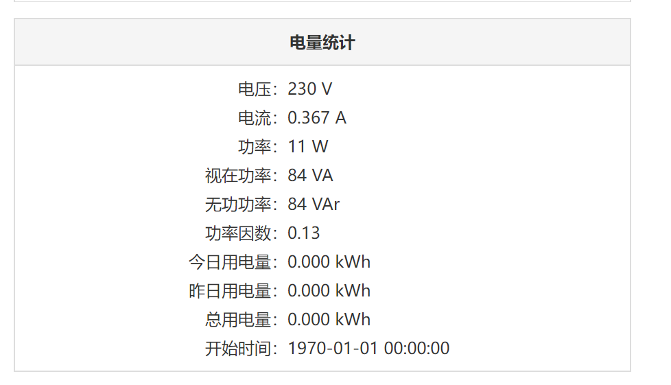
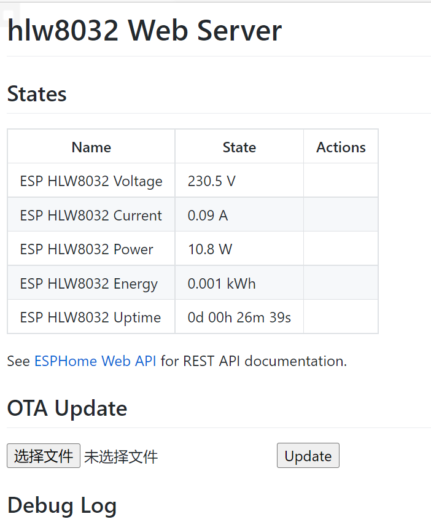

ESP-HLW8032-Meter电表制作 接入Home Assistant效果:
硬件图:
加个外壳
软件: 这是使用罗总框架实现数据获取

这是使用ESPHome实现数据获取

资源: HLW8032手册: HLW8032_C128023.pdf
BOM表和Gerber文件: ESP-HLW8032-2.zip
罗总框架实现的固件:
ESPHome实现的代码: hlw8032.yaml
HTML BOM: ibom.html
开源协议: GPL 3.0
hlw8032.yaml
1 2 3 4 5 6 7 8 9 10 11 12 13 14 15 16 17 18 19 20 21 22 23 24 25 26 27 28 29 30 31 32 33 34 35 36 37 38 39 40 41 42 43 44 45 46 47 48 49 50 51 52 53 54 55 56 57 58 59 60 61 62 63 64 65 66 67 68 69 70 71 72 73 74 75 76 77 78 79 80 81 82 83 84 85 86 87 88 89 90 91 92 93 94 95 96 97 98 99 100 101 102 103 104 105 106 107 108 109 110 111 112 113 114 115 116 117 118 119 120 121 122 123 124 125 substitutions: device_name: hlw8032 friendly_name: ESP HLW8032 api_pw: !secret api_password ota_pw: !secret ota_password esphome: name: ${device_name} platform: ESP8266 board: esp01_1m logger: api: password: ${api_pw} reboot_timeout: 0s ota: password: ${ota_pw} web_server: port: 80 time: - platform: homeassistant id: homeassistant_time wifi: ssid: !secret wifi_ssid password: !secret wifi_password ap: ssid: "HLW8032" password: "12345678" captive_portal: uart: rx_pin: 13 baud_rate: 4800 sensor: - platform: uptime id: uptime_s update_interval: 60s - platform: cse7766 current: name: "${friendly_name} Current" filters: - lambda: return x / 1.88 ; voltage: name: "${friendly_name} Voltage" filters: - lambda: return x * 1.88 ; power: name: "${friendly_name} Power" filters: - lambda: return x * 1.88 ; energy: name: "${friendly_name} Energy" filters: - lambda: return x / 1.88 /1000; unit_of_measurement: kWh text_sensor: - platform: template name: "${friendly_name} Uptime" lambda: |- uint32_t dur = id(uptime_s).state; int dys = 0; int hrs = 0; int mnts = 0; if (dur > 86399) { dys = trunc(dur / 86400); dur = dur - (dys * 86400); } if (dur > 3599) { hrs = trunc(dur / 3600); dur = dur - (hrs * 3600); } if (dur > 59) { mnts = trunc(dur / 60); dur = dur - (mnts * 60); } char buffer[17]; sprintf(buffer, "%ud %02uh %02um %02us", dys, hrs, mnts, dur); return {buffer}; icon: mdi:clock-start update_interval: 60s